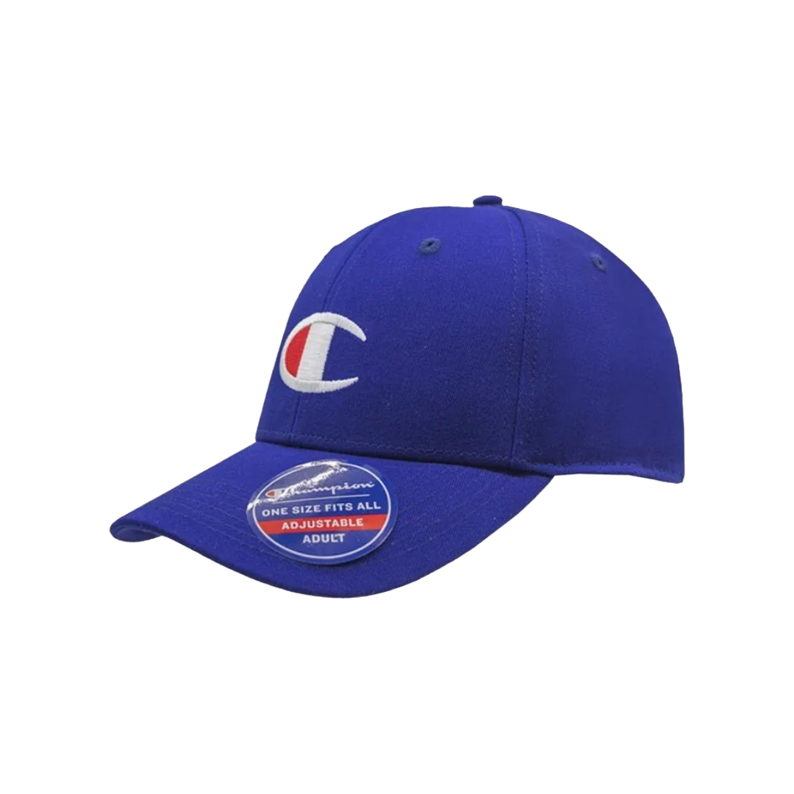

¿Qué tipo de jockey va contigo?
Conoce las diferencias entre snapback, trucker y dad hat.
Leer artículoIdeas para elegir, combinar y cuidar tu próxima corona.
Conoce las diferencias entre snapback, trucker y dad hat.
Leer artículo